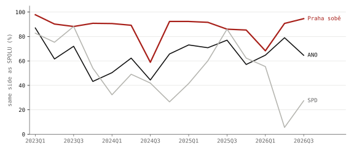

Prague, measured · Part 1 of 5 · pre-registered · City Assembly roll calls, 2010 – September 2026
Prague's council rarely says no
The city publishes how each of its 65 councillors voted on every resolution it adopts. In the current term the coalition votes as one club, the opposition club Praha sobě sides with it nearly nine times in ten, and the assembly has almost stopped voting against anything, so that dissent is recorded mostly as a councillor not pressing the button. Going back to 2010, a pre-registered reading of 10 565 roll calls finds that the same councillors vote against about half as often in each new term, and that a list votes according to whether it governs more than according to the party behind it.
- votes read, 2022–2026
- 2 468 42 sessions · one final vote per resolution
- Praha sobě with the coalition
- 88 % an opposition club · same side as SPOLU
- "against" per 100 present
- 0.28 1.06 in 2010–2014 · passed votes
- the same councillor's votes against, each new term
- × 0.49 59 people · p < 0.001
- ANO voting yes, in the coalition / in opposition
- 95 / 58 % Praha sobě: 95 / 77 %
- registered tests passed
- 1 of 3 Holm, family-wise 5 %
Photo: Stanislav Dusík · CC BY-SA 4.0, colour held
.jpg){kind=link}
Prague's City Assembly publishes its roll calls as open data: one row per vote, one column per councillor, and in each cell what that councillor did1. There are five possible entries. Hlas pro is a vote for, hlas proti against, zdržel se an abstention. Nehlasoval means the councillor was in the room and pressed nothing, and chyběl means absent. A resolution needs 33 votes for, a majority of all 65 seats, so the three ways of not voting for have the same legal effect, since none of them counts towards the 33, and they differ only in what goes on the record.
The current term, from its first session in November 2022 to September 2026, holds 2 468 votes over 42 sessions, read here member by member. The same files exist for the three terms before it, and the whole record since 2010 holds 10 565 roll calls. Across those four terms votes against have become rare, which leaves three questions about the change. The first is whether the same councillors changed how they vote or were replaced by others who vote differently. The second is whose no it is when a no is recorded, and whether the chamber divides by government and opposition or by left and right. The third is what the opposition votes against. Legislative scholars have tools for each of these: scaling votes into positions23, comparing a government–opposition divide with a left–right one4, and separating members who change their behaviour from members who are replaced5. They are used here under rules fixed before any vote was modelled6.
The coalition and the opposition clubs, 2022–2026
Since 15 February 2023 Prague has been governed by SPOLU (ODS, TOP 09, KDU-ČSL), the Pirates and STAN, 36 of the 65 seats7. For each vote and each club, the club's position here is yes if more than half of its members present voted for, and anything else if not. Measured that way, STAN took the same side as SPOLU, the mayor's club, on 98 % of the votes, and the Pirates on 97 %.

Praha sobě, with 11 seats, has been outside the coalition for the whole term, yet it took the same side as SPOLU on 88 % of the votes. ANO, the largest opposition club, did so on 64 %, and SPD on 52 %. The one councillor outside every club is Hana Kordová Marvanová, elected for SPOLU and expelled from its club in February 2023 after she did not vote for Bohuslav Svoboda as mayor8. She is counted on her own here, so her votes never move SPOLU's position.
Taken quarter by quarter, Praha sobě stays close to the coalition apart from two dips, in the third quarter of 2024 and the first of 2026. In both of those sessions a third of its members present pressed nothing and several were absent, and in neither did the club vote against.

Votes against, abstentions and pressing nothing, 2010–2026
Of the 143 360 entries recorded this term while councillors were present, 403 are "against". There are 1 269 abstentions and 25 734 cases of pressing nothing. Every club, in government or in opposition, records disagreement almost entirely by not voting: for ANO, 98 % of its members' present non-yes votes are nehlasoval, for SPOLU 98 %, and for the Pirates 84 %.
The same files for the three earlier terms show that on the resolutions that passed, the rate of "against" has fallen in every term since 2010, from 1.06 per 100 councillors present to 0.28. In 2010–2014, 11.5 % of passed votes drew at least one vote against, and in this term 4.5 % did. Over the same years, pressing nothing rose from 12 to 18 per 100 present.

The numbers fit a reading in which Prague's politics has become more consensual, because most items are negotiated before they reach the floor and what is left to vote on is already agreed, and equally one in which disagreement has moved off the record. Pressing nothing is the one way of not supporting a resolution that nobody has to explain, whereas a vote against is a position. The roll calls cannot choose between the two readings, although under either of them a reader of the record now learns less about who opposed what than a reader in 2010 did.
How this was done
The design of the four-term study was written, reviewed by three referees (in legislative studies, statistics and data audit), revised, and committed to the site's public repository before any vote was modelled6. It fixes the hypotheses, one test for each and the decision rules. The three confirmatory tests share a family-wise error rate of 5 % through Holm's procedure9. Everything that changed afterwards is listed, dated, at the end of the design file and summarised below.
The files hold votes on substantive items only, not on the agenda or procedure, and in practice one final vote per resolution10. Rejected proposals and amendments are almost absent: in the current term, two votes in the file failed. Comparing the numbered votes of each sitting with the rows published shows that the files hold between 55 and 67 % of the roll calls taken. The missing ones are procedural votes, agenda changes and amendments, and in national parliaments those are the votes on which government and opposition fight most1112. Everything in this article is therefore about the final votes on the resolutions the assembly adopted, which records how it reached the resolutions it passed and leaves out much of what it argued about.
Clubs are the lists councillors were elected from, taken from the Statistical Office's candidate registers13. For the current term they were checked against the clubs on the city's own list of councillors14, and the only difference is Kordová Marvanová. The councillor-to-list crosswalk for all four terms is published with the design6. The dates on which each list entered and left the coalition come from coalition agreements and news reports15, and resolution titles for 2022–2026 from the city's resolution register1.
The tests
| Hypothesis | Test | Result |
|---|---|---|
| H1 · the same councillors vote against less, term after term | within-person change < 0 | supported × 0.49 per term, p < 0.001 |
| H3 · votes split along coalition and opposition better than along left and right | classification errors | not supported left–right cut fits better |
| H4 · the opposition opposes planning and property more than grants | difference in non-support | not supported −0.4 points, p = 0.53 |
A fourth hypothesis, on when abstentions fell, was demoted to description before any test was run. A research assistant had looked at the answer by accident. It is in "Abstentions before and after 2018" below.
The same councillors across consecutive terms
Fifty-nine people sat in two consecutive terms and were seated for at least 300 votes in each, 73 such pairs in all. For each pair the test compares a councillor's rate of voting against with their own rate one term earlier. It uses only votes against, because they need a button press, so no change in how the system records a member who presses nothing can move them.
The same people also move between government and opposition, and opposition councillors vote against more. Each change is therefore adjusted for the change in how much of the councillor's term their club spent in opposition. With that adjustment, a councillor's rate of voting against roughly halves from one term to the next (× 0.49, p < 0.001, sign-flip test over people).

The pooled estimate combines three transitions that went differently. Between 2010–14 and 2014–18 the same 21 people voted against a fifth as often, so the change came from conversion. Between 2014–18 and 2018–22 the 20 people who stayed voted as before, and the whole fall of the assembly's rate, 0.35 votes against per 100 present, came from who left and who arrived. Between 2018–22 and 2022–26 there was a smaller conversion, with the rate falling to about two thirds. Each new cohort has also arrived voting against less than the one before it: 0.67 per 100 present among 2014's newcomers, 0.30 among 2018's and 0.26 among 2022's.
Yes votes in the coalition and in opposition
Setting each list's share of yes votes side by side for the periods it governed and the periods it did not, using the coalition dates from agreements and news reports15, shows how large the adjustment for coalition status is.

TOP 09 voted yes 91 % of the time while it led the city in 2011–14, and 43 % in opposition in 2016–18. ANO voted yes 95 % in the coalition of 2014–18, and 58–60 % in opposition since. Praha sobě, a local movement, voted yes 95 % in the coalition of 2018–22 and 77 % in opposition since 2023, which is still the most of any opposition club and matches how close it sat to SPOLU in fig. 1. Each list that has both governed and opposed thus voted differently in the two roles. New coalitions bring new agendas, and this comparison is not a causal estimate. The size of the swing nonetheless puts a list's voting on the city's ordinary business down mostly to its seat in or out of the coalition rather than to its programme.
Coalition and opposition, or left and right
H3, following Hix and Noury4, tested whether on the contested votes a single dividing line between coalition and opposition sorts the councillors better than a cut along the left–right order of their national parties. For left and right the design used the Chapel Hill expert survey16: economic left–right for 2018–22, and general left–right for 2022–26, where the economic scale lines the coalition up next to itself (Appendix B of the design).
The best left–right cut made 10 fewer errors per 100 councillors than the coalition–opposition line in 2018–22 and 6 fewer in 2022–26, and the reason lies in which clubs vote no (fig. 6).

In fig. 6 the coalition clubs almost never vote no, and when a club does, it is usually one opposition club on its own. In 2018–22, ODS did so alone on 23 % of the contested votes, ANO alone on 12 %, and the two together on 15 %. In 2022–26, SPD did so alone on 20 %, ANO alone on 11 %, and the two together on 17 %. A left–right cut can separate ODS, or SPD, from everyone else, because they sit at one end of the scale. A single line between coalition and opposition cannot, because it must put ANO on the same side as them. The registered comparison gave left–right that flexibility, since any cut was allowed against two fixed sides, and that asymmetry was in the design before the data were seen. It is reported, and the test is not re-specified.
A one-dimensional scaling of the votes, reported as description3, still puts every coalition club on one side and every opposition club on the other in both terms. In 2018–22 the Pirates score +0.96, Praha sobě +0.82 and the TOP 09 and STAN list +0.20, against ANO at −1.06 and ODS at −1.10. In 2022–26 the Pirates score +0.83, STAN +0.70 and SPOLU +0.58, against Praha sobě at −0.39, SPD at −1.08 and ANO at −1.23. The main line in the assembly therefore runs between government and opposition, while the noes on the opposition side come from separate clubs voting on their own.
Every councillor, 2022–2026
The table reads the current term's file one councillor at a time. Present is the share of votes, while they held the seat, at which the voting system recorded them as present (anything but chyběl); it cannot tell whether they were in the room. Yes, pressed nothing and the rest are counted over the votes at which they were present. "With own club" is how often their vote (yes or not yes) matched their club's side, and "with SPOLU" how often it matched the mayor's club. Click a heading to sort; the buttons filter by club.
The three lowest attendance records, between 60 and 67 %, all belong to members of Praha sobě, and they account for most of the dips in its line in fig. 2, where its members were absent and did not vote against. The councillors who most often record a vote against are all in opposition, three of the top five in SPD, which matches SPD's place in fig. 6. The highest count of votes against by any councillor this term is below thirty.
| Councillor | Club | Present | Yes | Pressed nothing | Abstained | Against | With own club | With SPOLU |
|---|
Abstained and against are counts of votes. Absence has many reasons (illness, parental leave, another office) and the file records none of them. The one councillor without a club, Hana Kordová Marvanová, has no "with own club". Replacements show the dates they held the seat; one STAN replacement has no name in the file. Data: members2022.json.
What the opposition votes against
Resolution titles were sorted into subjects by a keyword dictionary. It was fixed before any title was joined to a vote, and checked against an independent coding of 200 titles it had not been tuned on (agreement 90.5 %, κ 0.88)6. The expectation was that land-use changes and property deals, where Prague's scandals have been, would draw more opposition than grants, but on the 2 237 council-proposed votes since February 2023 they do not. Opposition councillors present withheld a yes on 41 % of grant votes, 41 % of property votes and 37 % of land-use votes, and the registered contrast is −0.4 points (p = 0.53). The lowest shares are on the budget (30 %) and on appointments (31 %), so the opposition's no is spread across the agenda instead of gathering on development.
Abstentions before and after 2018
Abstentions fell abruptly between 2014–18 and 2018–22 (fig. 3), and nothing documented changed in how votes are taken. The rules of procedure were amended in 2019, a change the assembly's own transcript calls mostly technical. The chair asked "for, against, abstaining?" in the same words from 2015 to 2023, and new voting equipment came only in 2023. The open data changed how it counts "present" in October 2020, but that field is not used here.

Read sitting by sitting, abstaining fades within each term, and at the 2018 boundary it steps down further than that trend alone would produce. The step appears even among the 20 councillors who sat in both terms, which argues against pure turnover and for something the councillors shared, such as a norm, a club practice or a habit of how the room votes. This analysis was demoted to description before it was run, so no test is claimed for it.
Robustness and data checks
The within-person result for H1 holds without the adjustment for status (× 0.59), on passed votes only (× 0.47) and without the first transition (× 0.72). It does not hold among the 26 people whose status did not change at all (× 0.86, p = 0.14). The point estimate still shows these councillors voting against less, but a group of 26 is too small to show it with confidence.
In the current term, the city's list gives each councillor's current club only, so a move between clubs earlier in the term that news reports missed would not show here. A seat left vacant goes to the next substitute on the same list17, which is how the file's one unnamed column, voting from April 2025 after a STAN councillor left, is assigned to STAN. In 10 % of the rows, nearly all from 2026, the count of votes for printed in the file is one or two higher than the named columns add up to, because replacements have no column of their own. The quarter-by-quarter figure (fig. 2) flags it.
What changed after registration
Two changes concern the design rather than any estimate. The abstention hypothesis became description before estimation, because its answer had been seen (above). For 2022–26 the left–right axis moved from economic to general left–right, a pre-specified fallback applied because on the economic scale the coalition occupies a contiguous stretch.
Three pieces were added after the results and are labelled as such in the text: the breakdown by which club says no, the one-dimensional scaling, and the comparison of lists in and out of government.
Some registered robustness checks were not run. They are a conditional logit and bounds for who returns, alternative contested-vote cut-offs, and an audit against complete session records.
The full list, the councillor-to-list crosswalk and every source are in the repository6. Every number in this article comes from six scripts, run on the published files:
tools/zhmp/votes.pyterms.pycouncil.pyclubs.pytopics.pycouncil_extended.py
What this does not show
Pressing nothing cannot be told apart from stepping out while logged in, from the chair not voting, from a declared conflict of interest, or from a club's collective decision, so the record shows what was pressed and says nothing about intent. Absence has reasons the files do not record either. Party positions are national expert scores for national parties, Prague's lists are not always those parties, and Praha sobě has no score at all. A third to a half of the roll calls are not in the files. The tests do not name or rank individual councillors, and the table of councillors reports the published record for each of them without judging it. None of the estimates, including the comparison of lists in and out of government, is a causal effect. Why abstentions stepped down in 2018 is still unexplained, and the dataset's contact at City Hall is the right person to ask.
Next in the series: whether Prague votes along its metro lines, precinct by precinct.
References
- Hlavní město Praha (2026): Výsledky hlasování ZHMP 2022–2026, open data, published in the city's catalogue on lkod.cz; earlier terms from the same catalogue (2010–2014, 2014–2018, 2018–2022); resolution titles 2022–2026 from the city's resolution register, usneseni.praha.eu.
- Poole, K. T., Rosenthal, H. (1997): Congress: A Political-Economic History of Roll Call Voting. Oxford University Press.
- Clinton, J., Jackman, S., Rivers, D. (2004): The statistical analysis of roll call data. American Political Science Review 98(2).
- Hix, S., Noury, A. (2016): Government–opposition or left–right? The institutional determinants of voting in legislatures. Political Science Research and Methods 4(2).
- Theriault, S. M. (2006): Party polarization in the US Congress: member replacement and member adaptation. Party Politics 12(4).
- Šandová, B. (2026): Prague's council: research design, registered version with dated changes, councillor crosswalk and sources.
- iROZHLAS (2023): V Praze vznikla koalice, zástupci Spolu, Pirátů a STAN dokončili smlouvu; Deník.cz on the signing on 15 February 2023, 36 of 65 seats.
- iROZHLAS (2023): Spolu vyloučilo Marvanovou ze zastupitelského klubu v Praze, 17 February 2023.
- Holm, S. (1979): A simple sequentially rejective multiple test procedure. Scandinavian Journal of Statistics 6(2), 65–70.
- Hlavní město Praha: dataset documentation: votes on substantive items; agenda and ad hoc procedural votes are excluded.
- Cox, G. W., McCubbins, M. D. (2005): Setting the Agenda: Responsible Party Government in the US House of Representatives. Cambridge University Press.
- Carrubba, C. J., Gabel, M., Murrah, L., Clough, R., Montgomery, E., Schambach, R. (2006): Off the record: unrecorded legislative votes, selection bias and roll-call vote analysis. British Journal of Political Science 36(4).
- Český statistický úřad: municipal election candidate registers 2010, 2014, 2018 and 2022, volby.cz; for 2022, candidates, municipal elections 2022, Prague.
- Hlavní město Praha: Seznam zastupitelů, clubs as of September 2026.
- Coalition dates: aktualne.cz, Novinky, Deník, iROZHLAS, ČT24 and the city's records, 2010–2023, listed with links in the sources note.
- Jolly, S., Bakker, R., Hooghe, L., Marks, G., Polk, J., Rovny, J., Steenbergen, M., Vachudova, M. A. (2022): Chapel Hill Expert Survey trend file, 1999–2019. Electoral Studies 75; CHES 2024, chesdata.eu.
- Zákon č. 491/2001 Sb., o volbách do zastupitelstev obcí, § 56.